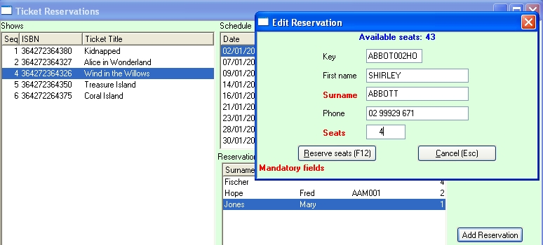

|
Ticket Reservations
|
Previous Top Next |

| · | You can type in the customer's first and last names, their phone number and the number of seats reserved.
|
| · | If the customer is already in your customer master, you can enter their customer key and the name and phone fields will be copied out of the customer master.
|